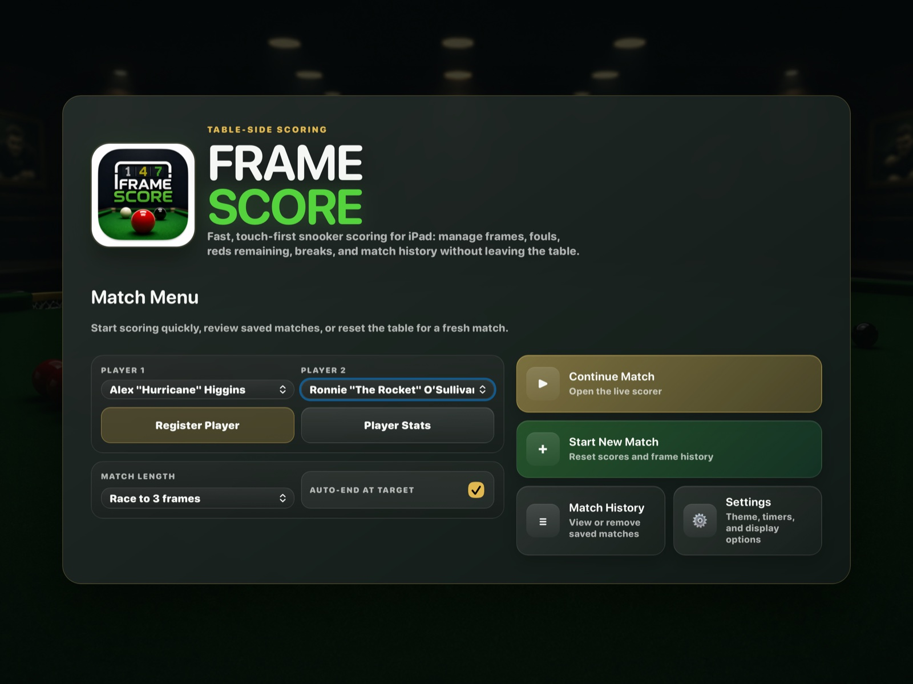
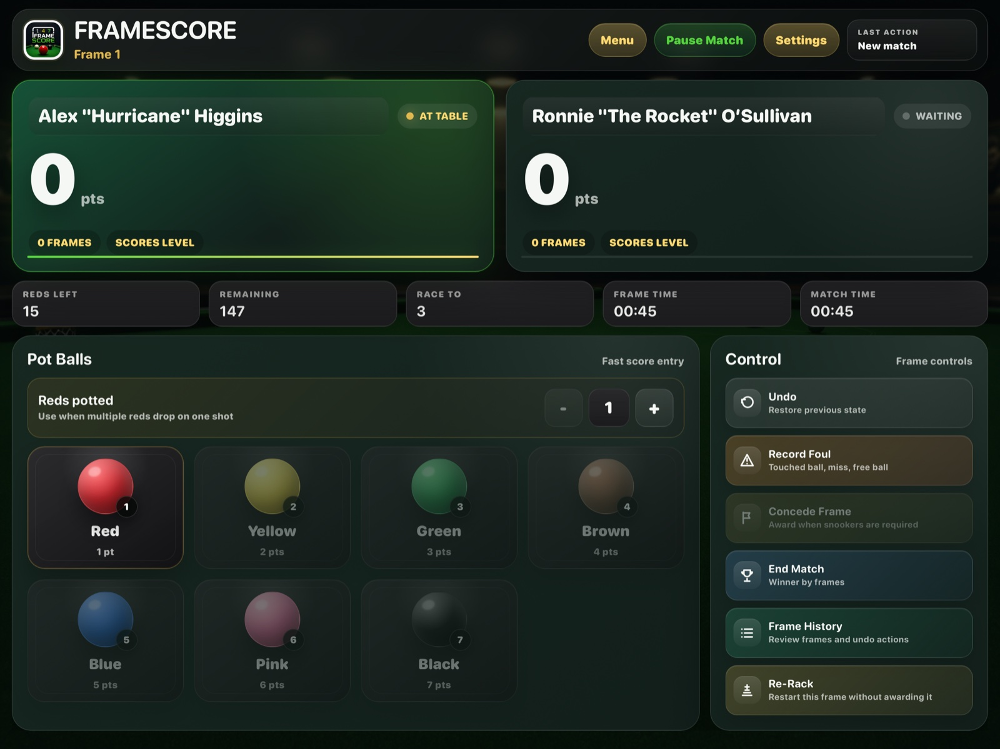
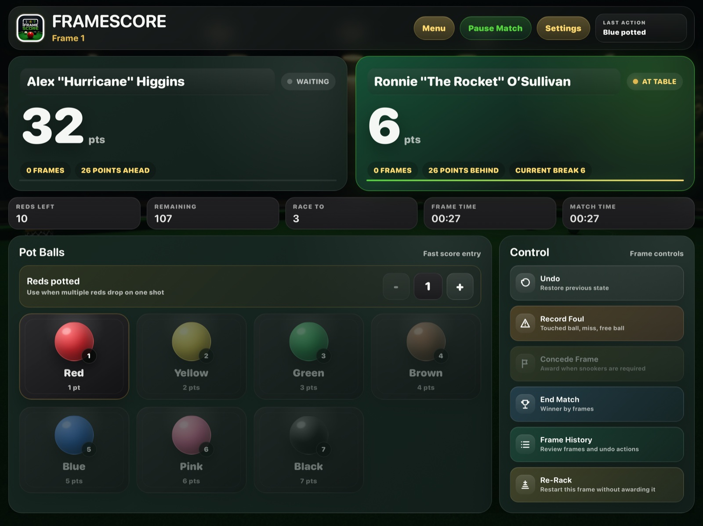
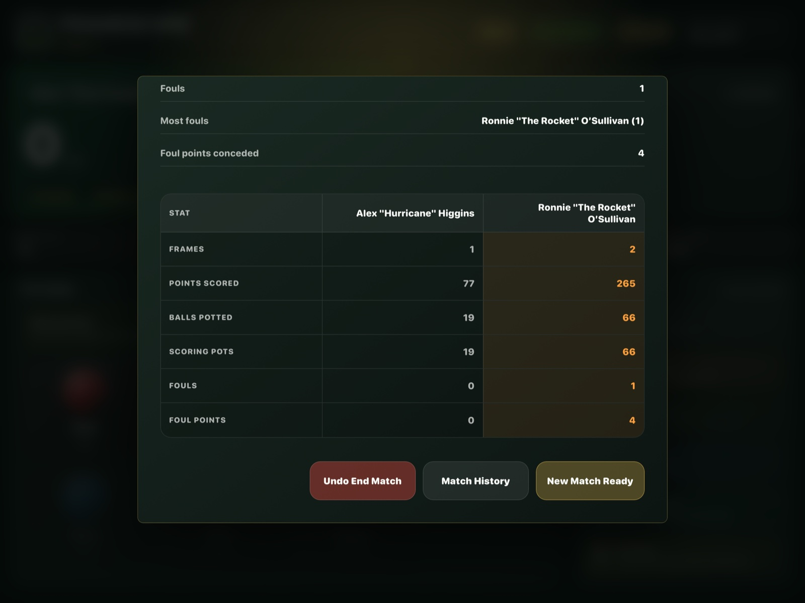
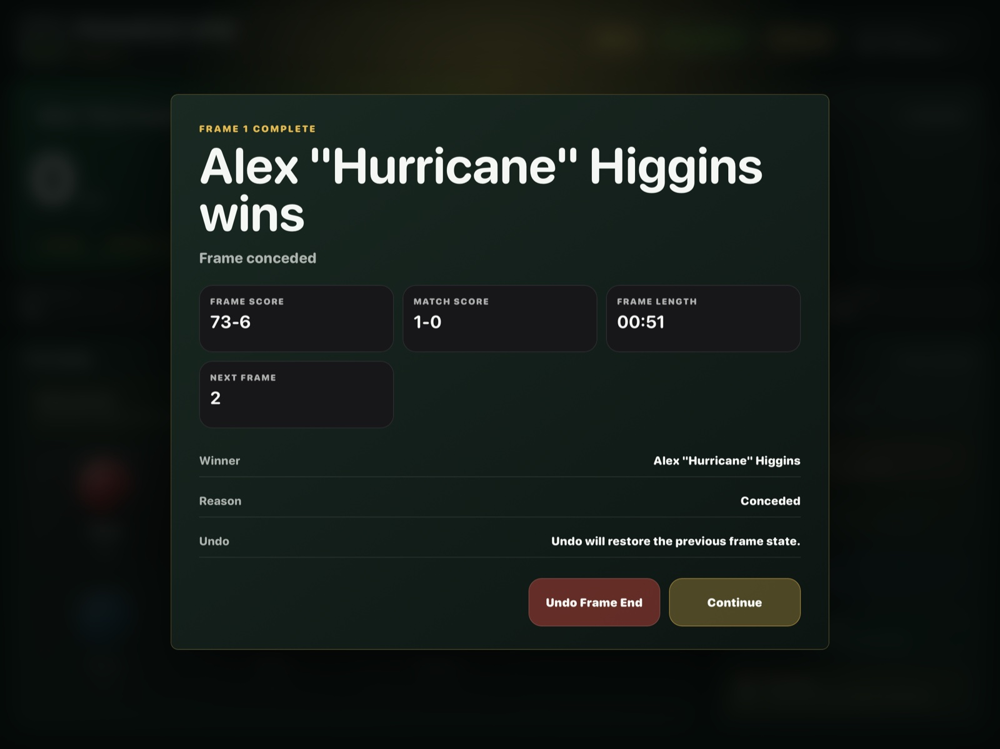
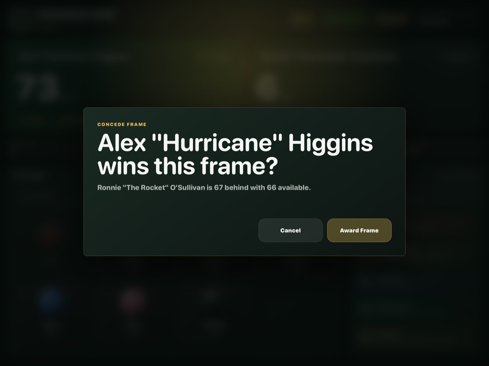

Track solo and two-player practice frames
Keep a clean record of scores, reds remaining, current breaks and frame results while players work on match play.
Developed by Docode Limited
Snooker Scoring & Break Tracker for iPad.
FrameScore is a clean, touch-first iPad snooker scoring app designed for real play, practice frames, club matches, break tracking and match history.

Built for amateur players, practice frames and club matches, FrameScore gives you a polished iPad scoreboard with fast scoring controls, player stats, match history and smart snooker flow.
Use FrameScore to track reds and colours, current breaks, fouls, concessions, frame timers, match timers and player results from a landscape iPad layout.
Built for play
FrameScore is focused on the practical moments where paper scoresheets, mental arithmetic or generic score apps slow the frame down.
Keep a clean record of scores, reds remaining, current breaks and frame results while players work on match play.
Use large iPad controls for pots, fouls, concessions and re-racks without needing a laptop or a full tournament system.
Review frame scores, match summaries and player statistics after play so results do not disappear when the table is cleared.
Choose players, match length and table settings before the frame starts.
Tap reds, colours, fouls and frame controls from a table-side layout.
Use summaries, player stats and history to keep track of performance.
Why FrameScore
Large scoring targets keep common actions close at hand during a frame.
Scores, frames, timers and break state are presented clearly for table-side use.
History and summaries help players review results after practice or club play.
FrameScore does not require a custom Docode login to use the app.
Scorekeeping detail
FrameScore keeps the key scoring context visible so the scorer can make fast, confident decisions at the table.
App Screenshots
Clear scoreboards, fast ball entry and match summaries keep the frame moving without getting in the way.





For iPad
FrameScore is designed for a scorer sitting near the table, with controls sized for quick touch input and a scoreboard that stays readable during play.
FrameScore is built for amateur players, practice frames and club matches where someone is scoring beside the table.
No. FrameScore helps keep the match organised while leaving scoring decisions in the scorer's control.
No custom Docode account is required. iCloud sync may be available through the user's Apple account where supported.
Yes. FrameScore is suitable for solo practice, casual frames and club matches where players want a clear score record and useful summaries.
Yes. FrameScore works as a table-side iPad snooker scoreboard with scoring controls, break tracking, timers and match summaries.
Yes. FrameScore includes foul recording alongside normal red and colour scoring, concessions, re-racks and undo support.